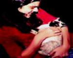

| "A Casa do Calafrio" - com Leila Cravos (Glória Nimbas e Rafaela Nimbas), Mário Tarântula (Bisness Nimbas) e Jezebel (Imortal Gato Sagrado do Himalaia) - direção Cristiano Balzan - 1994 - CB Produções. |
| Sinopse Numa noite em 1905, Bisness Nimbas assassina sua própria irmã, Rafaela Nimbas, que enquanto agoniza reúne forças e consegue estrangular Bisness antes de morrer. Com esta dupla tragédia, a casa da família Nimbas fica fechada por 90 anos. É quando chega Glória Nimbas, a descendente mais próxima da família para tomar posse da casa, que agora lhe pertence. Tudo corre bem, até que coisas estranhas começam a acontecer. É o espírito de Bisness que ainda está ali, e começa a assombra-la. Glória não se intimida com facas voando pela casa e Bisness acaba se materializando. Numa visão, Glória encontra os antigos diários da família Nimbas e, entre outras coisas, descobre que somente o "Imortal Gato Sagrado do Himalaia" é invulnerável aos poderes de Bisness. Começa a perseguição ao Gato, culminando com uma luta entre eles. Glória porém continua tendo visões, o que nos deixa o gancho para a segunda parte: Glória enlouqueceu ou Bisness voltou? Curiosidades
|
 |